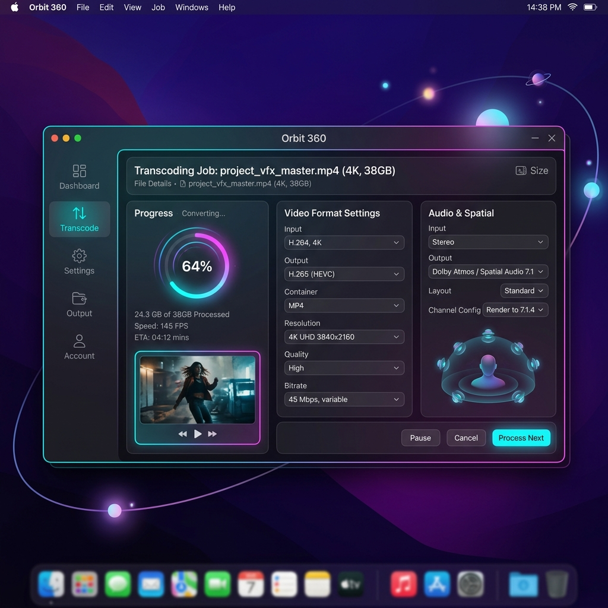

Orbit 360 is a sleek, native macOS tool designed to transcode 360° VR footage and preserve, copy, or restore 4-channel spatial audio. No complex timeline clutter—just pure, high-performance conversions.

Everything you need to convert and prepare 360° video and spatial audio for VR platforms without the overhead of heavy video editing packages.
Convert camera source files and equirectangular exports into clean MP4, MOV, or WebM outputs optimized for online sharing and playback.
Easily extract and restore 4-channel spatial audio from original camera sources back into your edited/graded master video exports.
Queue up to 20 videos at once. Set global preferences or customize presets for each video individually, then export them all in a sequential batch.
Optimized for Apple Silicon (M1/M2/M3/M4) and Intel Macs alike. Built using Swift and native macOS controls for blazing-fast operation.
Package your own ffmpeg binaries directly inside the app bundle, or configure the path to your custom installed package in Settings.
Pre-verify resolution, frame rate, audio channels, and metadata directly in the app to prevent bad uploads to VR portals before you render.
Experience how Orbit 360 simplifies your 360° transcoding pipeline in four simple steps.
Simply drop your 360° camera source files, equirectangular masters, or audio reference files into the media drop zone. Orbit 360 immediately probes the media properties, showing resolution, codec, duration, and audio configurations instantly.
Drop 360° Video Here
Supports MP4, MOV, WebM, INSVChoose exactly how you want your audio streams to behave in the exported file. Orbit 360 gives you full command over your audio tracks.
Add up to 20 jobs to the processing queue. You can batch configure format parameters or adjust settings on individual files. Hit 'Start Export Queue' and watch Orbit 360 handle the transcoding sequentially in the background while updating live progress, frame rate, and real-time ETAs.
Before uploading to YouTube VR, Meta Quest, or sending to a client, inspect the files. The integrated Validator audits the video and audio streams, confirming resolution parameters, spatial channels, and VR projection metadata tags.
VALID - Metadata tags present and verified.
VALID - Correct layout detected (AMB_FORMAT).
Orbit 360 requires macOS 13 Ventura or newer. It uses the powerful FFmpeg engine under the hood to perform high-speed conversions.
The easiest way is to install via Homebrew. Run this command in Terminal:
brew install ffmpeg
Download the latest release, drag Orbit 360 to your Applications folder, and configure path overrides in the app Settings if necessary.
Download Orbit360.dmgAre you deploying/redistributing or prefer static binaries without installing Homebrew?
You can bundle FFmpeg directly inside the application folder before packaging.
# Download static macOS binaries
./scripts/download_ffmpeg_macos.sh
# Compile universal app bundles
swift build -c release --arch arm64
swift build -c release --arch x86_64
# Package Orbit360.dmg
./create_app.shFind answers to common questions about Orbit 360 capabilities and workflows.
When you edit or grade 360° videos, NLE software like Premiere Pro or DaVinci Resolve often strips spatial audio metadata or compresses the channels down to stereo. Orbit 360 takes your original camera file (which has the raw 4-channel spatial sound field) and copies that exact audio stream directly into your finished video export, writing the correct VR spatial tags in the output file.
No, Orbit 360 does not perform camera stitching. You should stitch your camera files first using your camera manufacturer's software (like GoPro Player or Insta360 Studio) or use equirectangular exports. Orbit 360 is designed to transcode stitched videos, manage spatial audio, batch process jobs, and validate exports.
Yes. By default, Orbit 360 scans standard directories (`/opt/homebrew/bin`, `/usr/local/bin`, and `/usr/bin`). You can easily go to settings in the top navigation panel and point the app directly to custom binary file paths on your filesystem.
Orbit 360 supports exporting to MP4 (H.264, H.265/HEVC, ProRes), MOV (ProRes, H.264, H.265/HEVC), and WebM (VP9, Opus). Input support depends on your FFmpeg configuration, which includes standard codecs and camera formats like GoPro .360 and Insta360 .insv files.